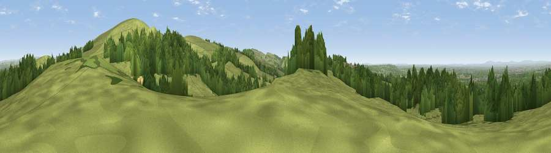

Viewpoint near Bollington
#13725 in England · top 22% of its area beats it · near BollingtonWhere it is
The exact computed spot (SJ 94725 80075). Click the marker for map links.
The view, rendered

A 360° render of this exact spot computed from the terrain model, tree cover and land cover — summer colours, afternoon light, calibrated against photographs of famous viewpoints. Real trees, hedges and buildings will differ in detail.
The panorama
Grey silhouette: terrain skyline in each direction (720 bearings, Earth curvature and refraction included). Dashed green: skyline with trees (+15 m) and buildings (+8 m) as obstacles. Blue strip: how far the ground is visible on each bearing.
Where the view opens
Wedge length = distance to the farthest visible ground on that bearing (vegetation-aware). Rings at 10, 25 and 50 km.
What fills the view
59% grassland · 37% woodland · 4% built-up ·
Angular shares of the visible panorama (visual magnitude), not map area. Landscape diversity 0.37 (0–1 Shannon).
Key numbers
More beautiful places nearby
The staircase of upgrades: each row has a higher view potential than everything closer. Driving times are estimates from straight-line distance, calibrated against real road routing — check an actual route before setting out.
| Place | Direction | Drive | Score |
|---|---|---|---|
| Viewpoint near Kettleshulme | E · 1 km | ~3 min | 70.3 |
| Higher Moor | ENE · 3 km | ~8 min | 71.1 |
| Viewpoint near Kettleshulme | SE · 6 km | ~13 min | 72.5 |
| Cats Tor | SE · 6 km | ~13 min | 72.8 |
| Harrop Edge | NNE · 17 km | ~29 min | 74.6 |
| Wild Bank | NNE · 18 km | ~32 min | 76.2 |
| Viewpoint near Carrbrook | NNE · 20 km | ~34 min | 77.1 |
| Viewpoint near Mow Cop | SSW · 24 km | ~39 min | 78.9 |
53.31758, -2.08064 · source: screening · position refined by local search. Computed location — check access rights before visiting.